Git是一个开源的分布式版本控制系统，在项目开发中可以用来托管代码，相比SVN，其速度更快，分支管理更加方便，但是命令较多，本文介绍Git的简单使用。
一、下载安装Git
Windows系统
1. Git下载
地址：https://git-scm.com/download/win
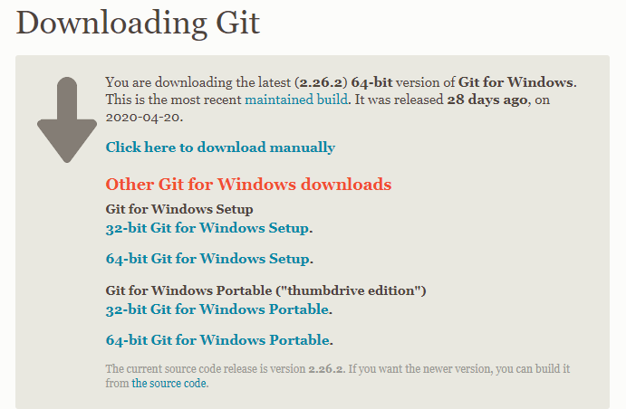
2. 安装
检验是否安装成功 电脑桌面或者其他任意文件夹下，点击鼠标右键，如果看到Git GUI和Git Bash则表示安装成功
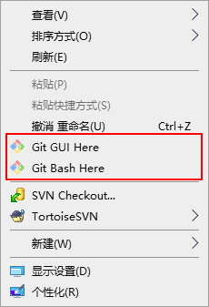
Git Bash是为了方便你在windows下使用git命令的模拟终端，我们可以在git bash中执行一些shell命令。
3. TortoiseGit安装
git GUI客户端有很多种：https://git-scm.com/downloads/guis/
Windows平台推荐使用TortoiseGit，可以通过图形化界面操作git，下载地址：https://tortoisegit.org/download/
Linux系统（Centos7）
安装Git最新版本
查看版本：
1 | [root@Server ~]# git --version |
删除老版本：
1 | sudo yum -y remove git |
在线安装
1 | sudo yum -y install https://packages.endpointdev.com/rhel/7/os/x86_64/endpoint-repo.x86_64.rpm |
离线安装
1、下载Git源码包：https://mirrors.edge.kernel.org/pub/software/scm/git/
2、解压
1 | $ tar -xvzf git-2.39.1.tar.gz -C /usr/local/git |
3、编译安装
1 | $ ./configure --prefix=/usr/local/git |
4、配置环境变量
1 | $ vim /etc/profile |
使配置生效：
1 | $ source /etc/profile |
5、验证是否安装成功
1 | $ git --version |
二、Git配置
初始化配置
1. 配置用户名和邮箱
全局用户名和邮箱配置
1 | git config --global user.name "username" // 添加用户名，username为你在Git服务器上（比如github）注册的用户名。 |
如果你的开发环境需要配置多个Git远程库(配置方法可参考文章同一台电脑配置Gitee、Github 的 Git SSH公钥)，要取消全局用户名和邮箱配置:
1 | git config --global --unset user.name |
局部用户名和邮箱配置命令如下：
1 | git config user.name "username" |
2. 查看是否配置成功
1 | git config --list |
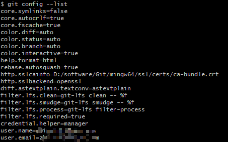
Git SSH公钥、私钥配置
Git本地仓库和Git服务器之间可以使用 SSH 公钥来进行认证登录，为了避免每次登录需要输入秘钥的麻烦，可以事先配置ssh公钥，具体可参考同一台电脑配置Gitee、Github 的 Git SSH公钥。
初始化新的Git仓库
在本地初始化新的Git仓库：
- 新建文件目录或者进入已有的文件目录下 可以通过cd的方法进入，或者直接在目录下右键->选择Git Bash Here
- 创建Git仓库
1
git init
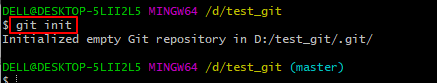
执行成功后，当前目录下会生成一个.git的隐藏文件夹，仓库创建完成。
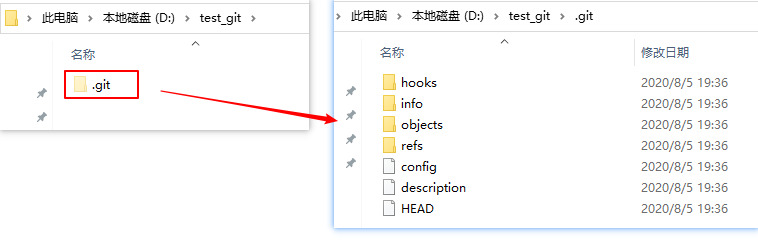
.git目录结构
本地初始化git仓库或者从远处仓库clone到本地的项目目录中都会有一个.git文件夹：
- hooks/：钩子文件，存储特定事件（如commit、push等）发生时触发的脚本。
- logs/:记录所做的更改。
- objects/:所有git对象，包括commit，trees，二进制对象，标签等。
- refs/：是存储git各种引用，包含分支、远程分支和标签。
- packed-refs：分支标识文件。
- config: 配置信息，包括仓库地址，分支，用户等。
- description: 项目描述。
- index: 暂存区（stage），一个二进制文件。
- COMMIT_EDITMSG：上一次提交的注释信息。
- HEAD: 记录代码库当前指向的分支。
- FETCH_HEAD： 一个版本链接，指向目前已经从远程仓库取下来的分支的末端版本。
- ORIG_HEAD: HEAD指针的前一个状态。
三、Git文件管理
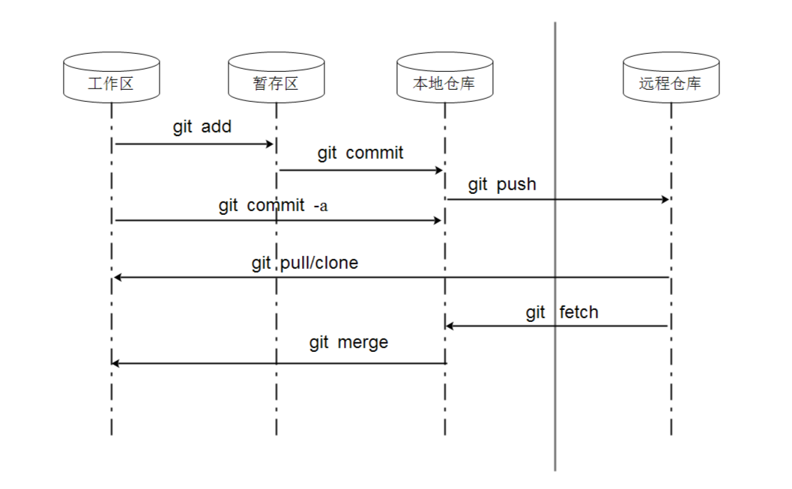
查看git帮助信息1
git help
添加文件
1. 查询状态
1 | git status |
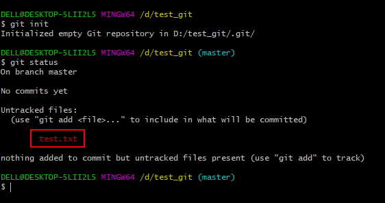
2. 将文件添加到暂存区
1 | git add test.txt |
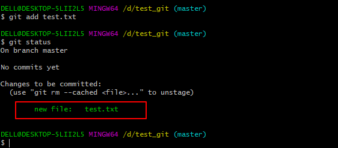1
2
3
4
5
6git add file //跟踪 -添加到暂存区
git add file1 file2 file3
git add folder/*
git add folder/*.py
git add folder
添加所有改动文件：1
2
3git add . # 添加所有改变的文档，包括文件内容编辑(modified)以及新文件(new)，不包括被删除（deleted）的文件
git add -u # 添加编辑或者删除的文件，不包括新添加的文件。
git add --all# 或者git add -A，添加所有改变的文件
3. 从暂存区提交到本地Git仓库
1 | git commit -m "add test.txt" |
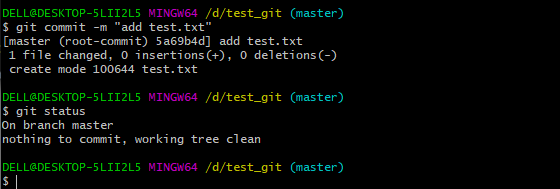1
git log //查看提交记录
第2步和第3步可以直接使用命令:1
git commit -am "提交注释”
删除文件
1. 删除文件
1 | git rm "test.txt" |
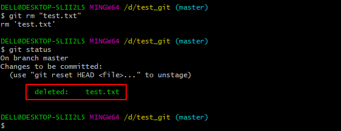
也可以直接手动删除文件
删除文件夹1
git rm -r foldername/
2. 提交到本地Git仓库
1 | git commit -m "delete test.txt" |
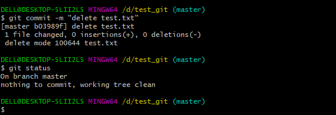
Git分支
创建分支
1 | git branch yourbranch //创建分支 |
合并分支
1 | git checkout master |
删除分支
1 | git branch -d yourbranch //删除本地分支 |
Git远程仓库
可以将本地仓库备份到远程服务器上的git仓库，实现代码共享，下面介绍本地Git仓库和Github 远程仓库的连接。
如果没有GitHub账号需要先注册一个：https://github.com/
本地Git仓库和GitHub仓库之间通信采用SSH协议加密，Git SSH公钥配置方法参考：同一台电脑配置Gitee、Github 的 Git SSH公钥。
1. 将本地仓库同步到git远程仓库
1 | git push |
如果是首次push，没有添加远程链接，在github创建新的仓库，然后复制仓库URL链接：1
2
3
4git remote add origin https://github.com/xxxxx/xxxxx.git
git push --set-upstream origin master
git push -u origin master
git remote remove origin //取消远程关联
Push新仓库1
2
3
4
5
6git init
git add README.md
git commit -m "first commit"
git branch -M master
git remote add origin git@github.com:ZHHAYO/vuepress-blog.git
git push -u origin master
Push存在的仓库1
2
3git remote add origin git@github.com:ZHHAYO/vuepress-blog.git
git branch -M master
git push -u origin master
2. 将远程仓库复制到本地
github项目仓库地址复制：
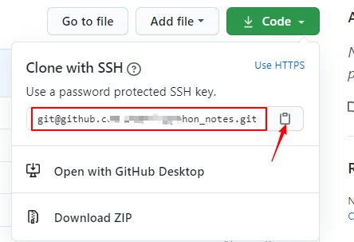
1 | git clone 仓库地址 |
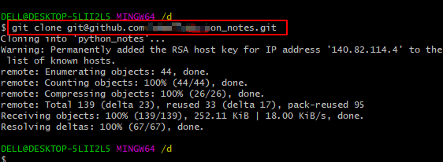
下载远程仓库指定分支代码：
1 | git clone -b 分支名 远程仓库地址 |
将远程仓库克隆到本地后，会生成一个.git的目录
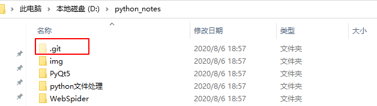
查看.git/config文件
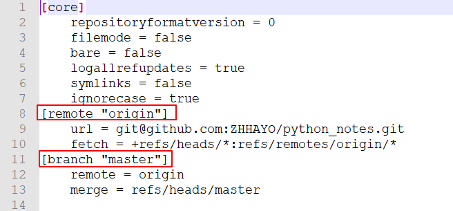
可以看到当前本地分支为master，git branch查看本地分支
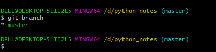
关联的远程库为origin，可以通过git remote查看
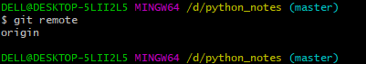
远程库origin所在的位置为 git@github.com:ZHHAYO/python_notes.git
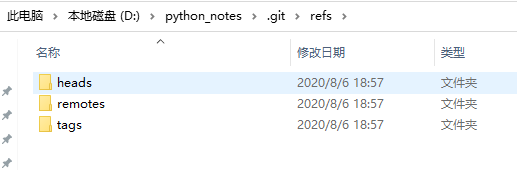
.git\refs\heads\master文件内容为：
7cf7212890aabea789631a02881861dcd08dac46
表示本地仓库最新的commit id
.git\logs文件夹下保存的是.git\refs文件夹下相应文件的变更记录1
2
3.git\logs\HEAD
.git\logs\refs\remotes\origin\HEAD
.git\logs\refs\heads\master
三个文件 内容如下：
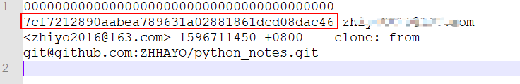
3. 本地仓库更新
如果远程仓库更新，可以使用git pull或者git fetch + git merge命令，将远程项目更新到本地。1
2
3
4git fetch origin master
git merge origin/master
git pull origin master
4. 查看远程仓库地址
1 | git remote -v |
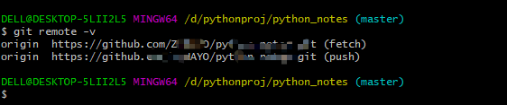
查看远程仓库和本地仓库之间的关系：
1 | $ git remote show origin |
四、gitignore文件
在使用Git管理仓库时，可能有些文件不需要进行版本管理，需要忽略的文件可以使用 .gitignore 文件来跟踪，该文件一般放在项目仓库的根目录下。
.gitignore 使用glob规则来匹配文件路径，开始是在Unix系统中用来匹配文件路径的，使用通配符匹配路径，很多编程语言也实现了glob方法，比如Python的glob模块。下面举几个 .gitignore 语法示例：
| 语法 | 说明 |
|---|---|
| log | 匹配名称为log的文件和目录，包括目录下的文件及子目录 |
| log/ | 匹配名称为log的目录，包括目录下的文件及子目录 |
| **/log | 匹配名称为log的任何目录 |
| **/log/test.log | 匹配名称为log的目录下的test.log文件 |
| *.log | 匹配后缀为log的所有文件 |
| /test.log | 只匹配根目录下的test.log |
| test.log | 匹配所有test.log文件 |
| test?.log | 匹配test开头，后面只有一个字符的log文件 |
| test[0-9].log、test[a-z].log | test后为单个数字、字母的log文件 |
.gitignore 文件使用# 来注释：
1 | # ignore all log |
五、常见问题
github访问问题
访问github经常不成功， 推荐一个代理工具dev-sidecar，地址为 https://gitee.com/docmirror/dev-sidecar 。使用方法参考说明文档。
git push报错
1 | OpenSSL SSL_connect: Connection was reset in connection to github.com:443 |
解决：1
$ git config --global --unset http.proxy
git clone报错
报错信息：1
2
3$ git clone https://github.com/hiyongz/GoProjects.git
Cloning into 'GoProjects'...
fatal: unable to access 'https://github.com/hiyongz/GoProjects.git/': OpenSSL SSL_connect: Connection was reset in connection to github.com:443
解决方案：关闭ssl认证1
$ git config --global http.sslVerify false
token认证
2021.8.14更新：
现在github去除了密码认证方式，通过HTTPS访问GitHub，需要token认证。
1 | $ git pull |
生成个人token如下：
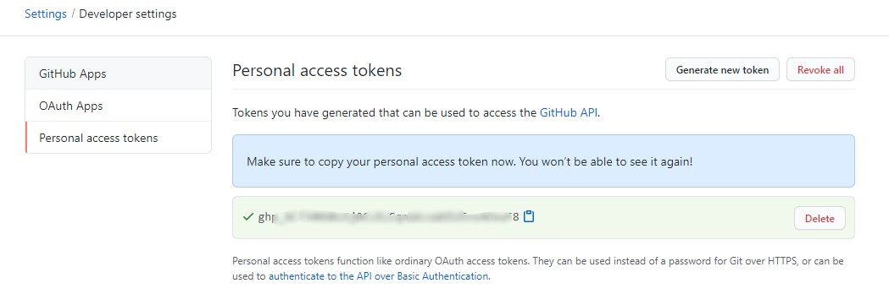
记得保存一下token！
个人访问token只支持HTTPS，如果你的远程仓库使用SSH，需要切换为HTTPS。使用 git remote -v 命令查看远程项目URL地址。
切换HTTPS命令：
1 | $ git remote set-url origin https://github.com/USERNAME/REPOSITORY.git |
查看是否设置凭证1
2$ git config credential.helper
manager-core
清除凭证管理：1
$ echo url=https://github.com/account | git credential reject
account为你的github用户名。
接下来的git操作如果要你输入用户名和密码，其中密码为前面获取的token值。
git pull报错
1 | $ git pull |
解决：
1 | $ git clean -f -d |
重新pull
参考：
- git - 简明指南：http://rogerdudler.github.io/git-guide/index.zh.html
- 廖雪峰git 教程：https://www.liaoxuefeng.com/wiki/0013739516305929606dd18361248578c67b8067c8c017b000
- Support for password authentication was removed. Please use a personal access token instead
- 清除凭证管理：https://git-scm.com/docs/gitfaq#http-reset-credentials
本文标题:Git简易教程-安装及简单使用
文章作者:hiyo
文章链接:https://hiyongz.github.io/posts/git-install-and-guide/
许可协议:本博客文章除特别声明外，均采用CC BY-NC-ND 4.0 许可协议。转载请保留原文链接及作者。